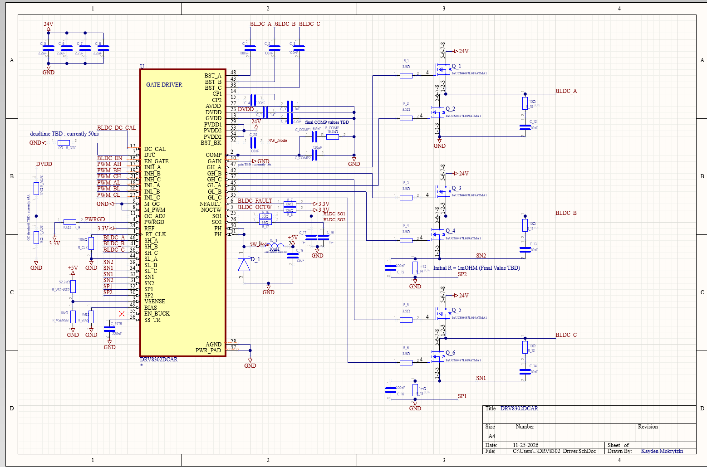

ROBOTICS / ELECTRICAL DESIGN · SEPTEMBER 2026–PRESENT
Rover Motor Drive Board
A three-phase BLDC motor drive schematic for the University of Guelph Robotics Team's six-wheel rover.
Problem I’m solving
The robotics team needs a motor drive board that can be integrated into its six-wheel rover. A previous board encountered problems and was scrapped, so the challenge is to develop a new drive circuit for the rover while using the earlier design and component datasheets as references.
Project overview
As an electrical team member, I developed a new motor drive-board schematic in Altium Designer for the team's six-wheel rover.
I used component datasheets and the previous board design as references while working with electrical team members on component selection, gate-drive circuitry, and schematic design. The schematic is complete; the wider board project remains in progress.
Drive circuit design
The drive board is being designed for a Maytech MTO6365-170-HA-C2 sensored brushless motor, a 170 KV sealed 6365 outrunner with a 10 mm shaft. The motor and board combination has not yet been tested.
The schematic uses a DRV8302DCAR gate driver with six PWM inputs and six IAUCN04S7L019ATMA1 MOSFETs arranged as three half-bridges for a three-phase brushless DC motor. Developing the circuit involved translating datasheet guidance into a new design while considering how the drive board will fit into the rover system.
Key design decisions
My design work included simplifying the circuit where practical, incorporating two shunt resistors for current-sensing feedback, and considering an appropriate gate-drive dead time to avoid simultaneous conduction in a half-bridge. I also selected provisional resistor and capacitor values using component datasheets and the needs of the circuit.
Component values and timing will be evaluated as the design progresses; the board has not yet been tested.
